Best tools for web development
Tools are the backbone of web development, offering efficiency, collaboration, and quality assurance. From editors like Visual Studio Code to frameworks such as React and testing suites like Jest, these tools streamline processes, enhance code quality, and ensure reliability. They enable faster development cycles, better team collaboration, and robust code maintenance, shaping modern web projects for success in today's tech-driven world


Git es fundamental en proyectos web por su control de versiones. Permite rastrear y administrar cambios, facilitando la colaboración entre equipos. Con ramificaciones (branches) y fusiones (merges), múltiples desarrolladores pueden trabajar simultáneamente sin interferir en el código principal. Ofrece seguridad, ya que los datos se almacenan de manera distribuida y se puede revertir a versiones anteriores en caso de errores. Además, Git alojado en plataformas como GitHub facilita la colaboración, revisión de código y seguimiento de problemas.
Angular es un framework web poderoso creado por Google. Basado en componentes y arquitectura MVC, facilita el desarrollo escalable. Utilizando TypeScript, ofrece tipado estático opcional para un código robusto. Su sistema de enrutamiento y enlace bidireccional simplifica la gestión de aplicaciones complejas. Angular CLI agiliza la generación de proyectos y herramientas adicionales garantizan eficiencia. Con una comunidad activa y amplio soporte, es ideal para aplicaciones modernas y de gran envergadura, destacándose por su estructura sólida y rendimiento optimizado.
 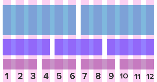
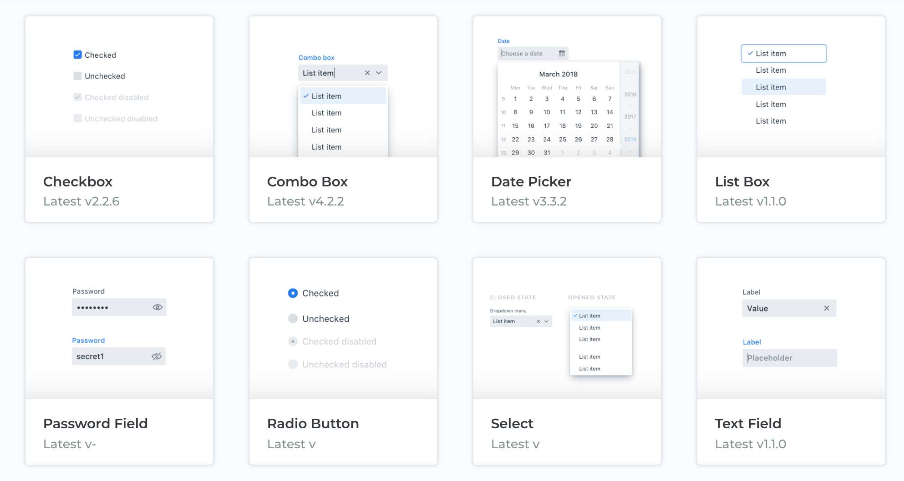
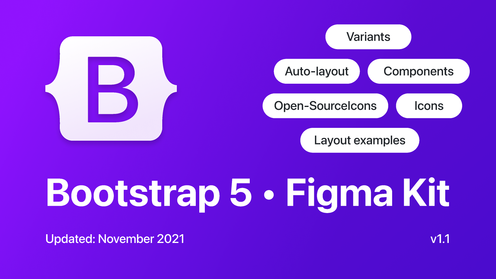
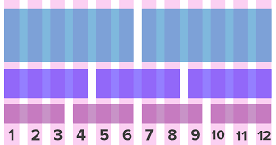
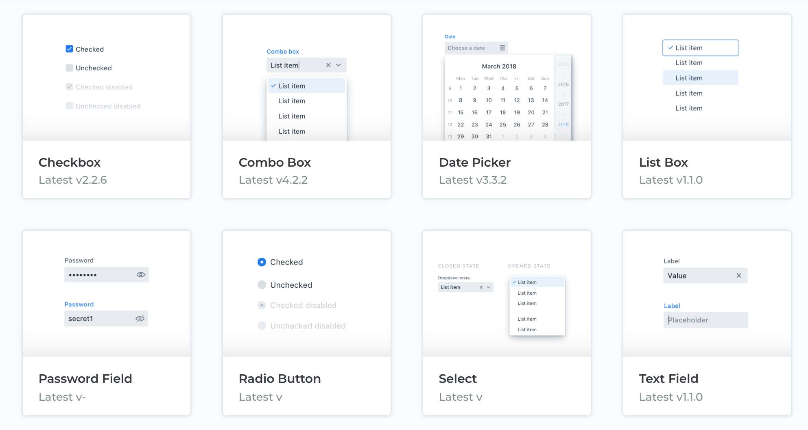
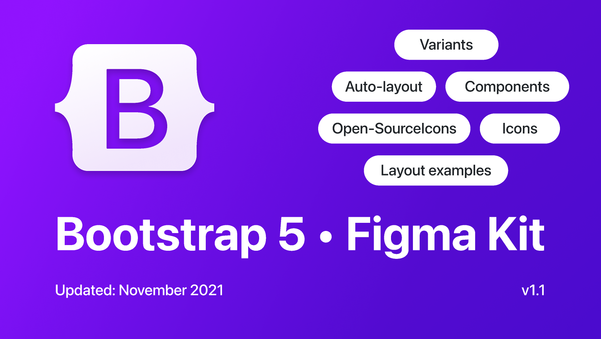
Bootstrap es un framework de desarrollo web líder, creado por Twitter, que simplifica el diseño responsive y la creación de interfaces atractivas. Su conjunto de herramientas preestablecidas, como cuadrículas flexibles y componentes CSS, permite la construcción rápida y eficiente de sitios web adaptativos. Bootstrap ofrece una extensa biblioteca de estilos y elementos reutilizables, optimizados para dispositivos móviles, lo que agiliza el desarrollo. Con una comunidad activa y una documentación detallada, es una opción ideal para proyectos que requieren un diseño moderno y compatible con múltiples dispositivos, ofreciendo una base sólida y de fácil uso para desarrolladores web.

 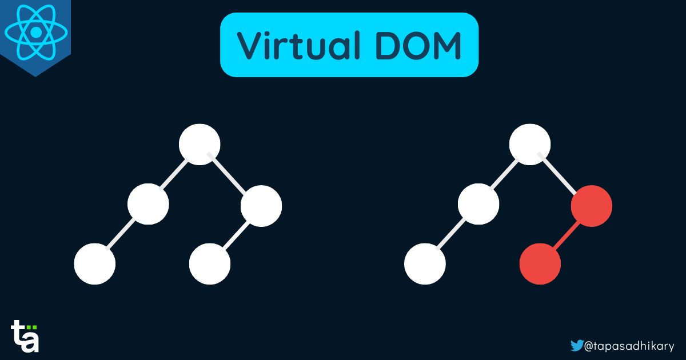
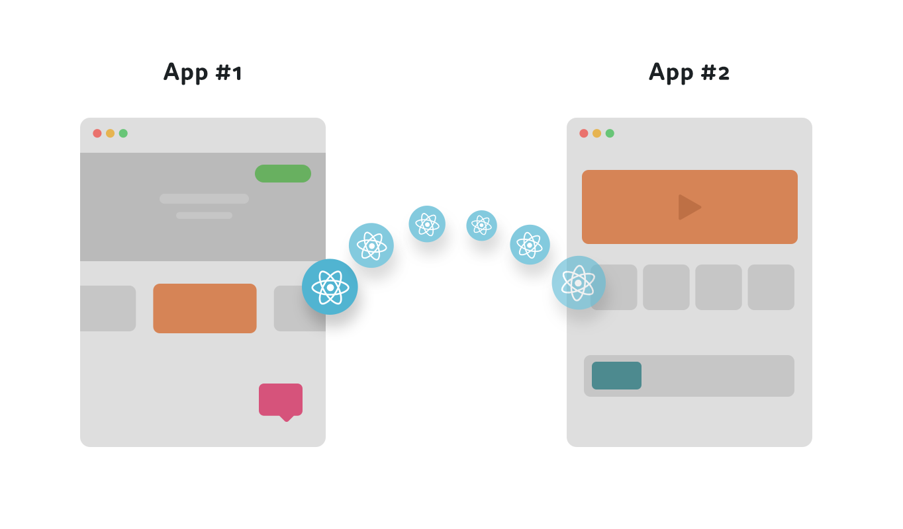
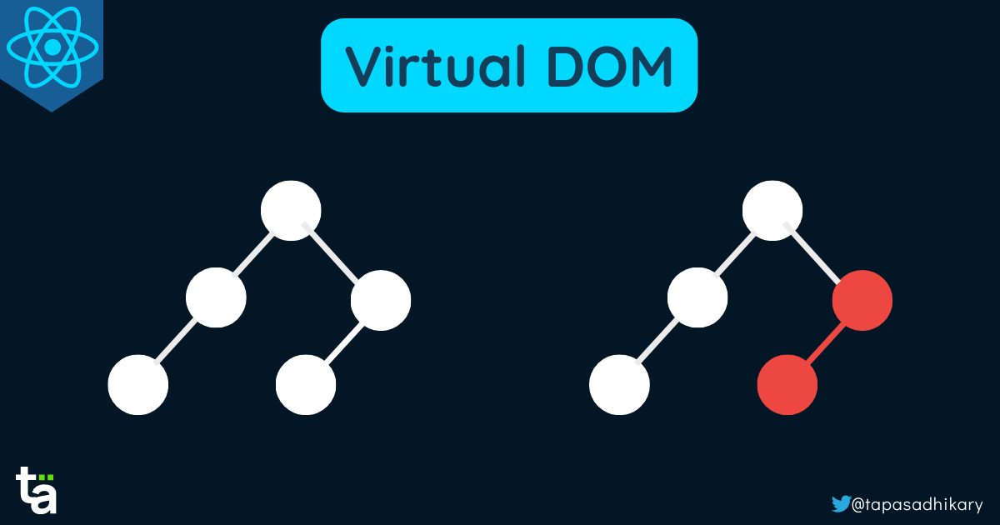
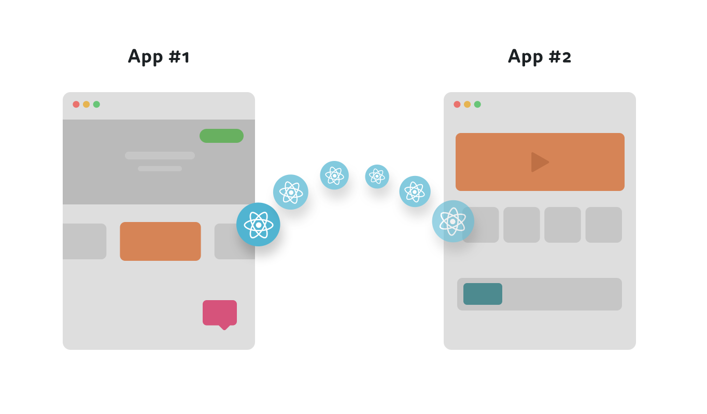
React es una potente biblioteca de JavaScript para construir interfaces de usuario interactivas. Desarrollada por Facebook, se destaca por su enfoque en componentes reutilizables que simplifican el desarrollo de aplicaciones web dinámicas. Su arquitectura basada en componentes y el uso de JSX permiten crear interfaces declarativas y eficientes. React utiliza un modelo de renderizado virtual que optimiza el rendimiento, actualizando solo los elementos necesarios en la interfaz, lo que mejora la velocidad de carga. Con una comunidad activa, una curva de aprendizaje gradual y una amplia gama de bibliotecas complementarias.
 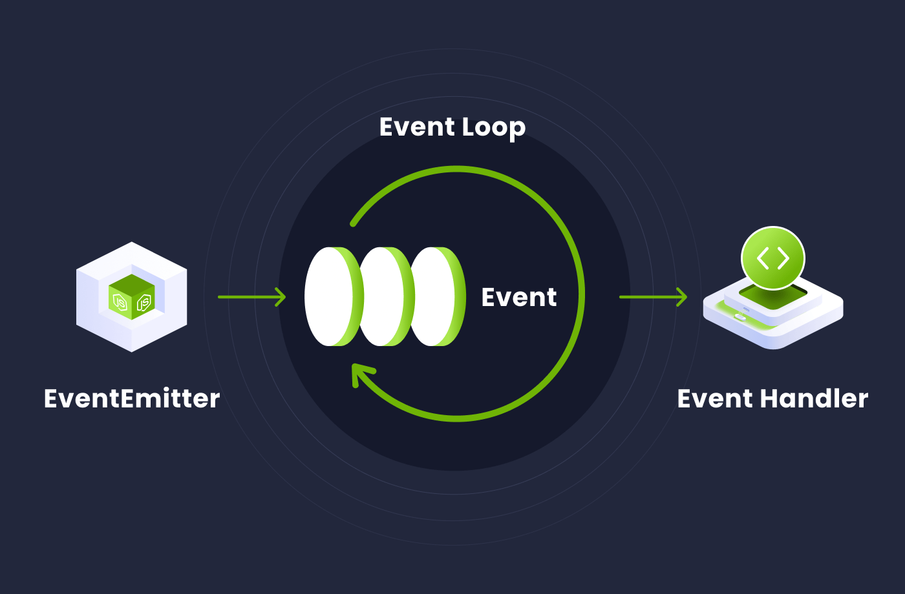
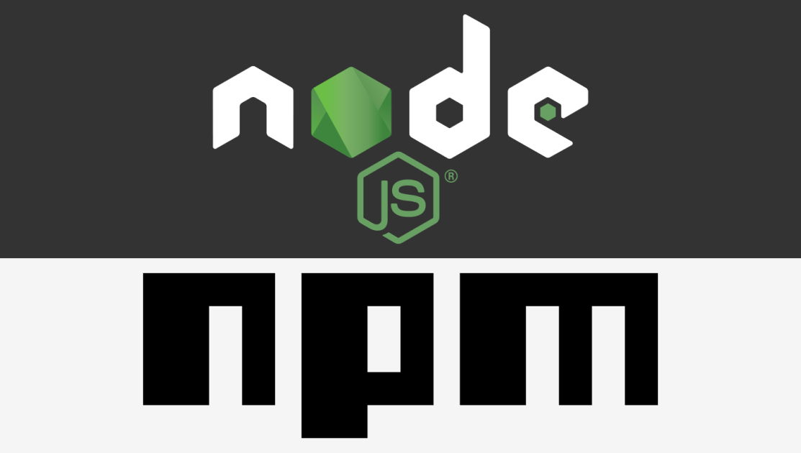
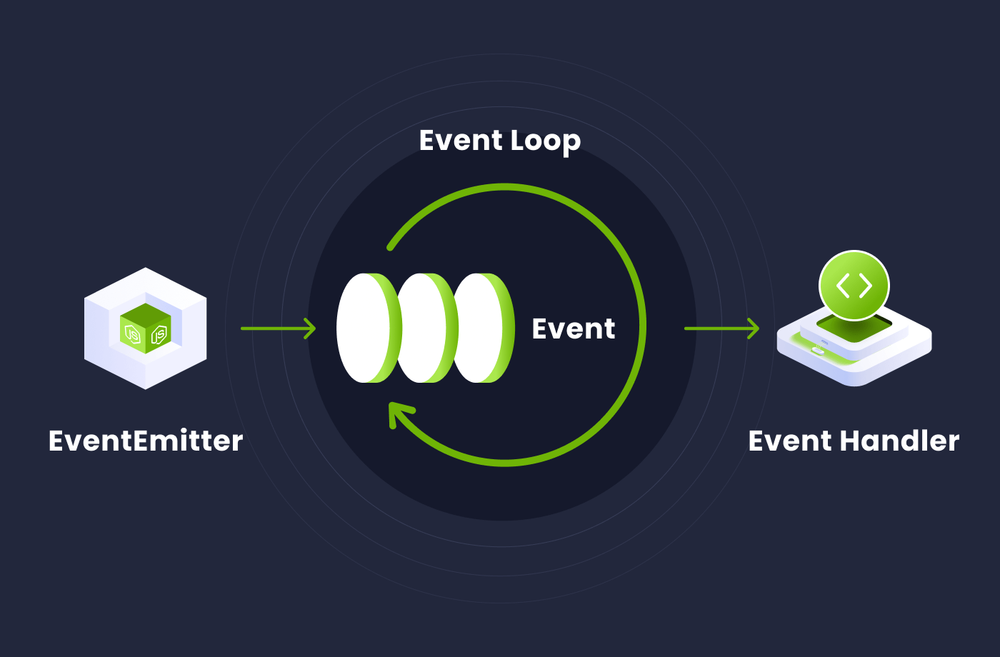
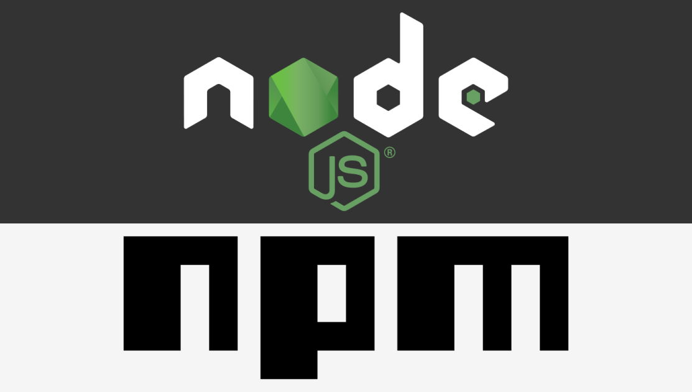
Node.js es un entorno de ejecución de JavaScript del lado del servidor que revolucionó el desarrollo web al permitir a los desarrolladores utilizar JavaScript tanto en el frontend como en el backend. Su importancia radica en la eficiencia, escalabilidad y velocidad en la creación de aplicaciones web. Al ser de naturaleza asincrónica, Node.js maneja múltiples solicitudes de manera eficiente, ideal para aplicaciones en tiempo real. Su vasto ecosistema de paquetes npm y su capacidad para construir API RESTful lo convierten en una herramienta crucial para el desarrollo ágil y modular en la web actual.


Visual Studio Code (VSC) es un poderoso editor de código desarrollado por Microsoft. Destacado por su versatilidad y extensibilidad, VSC es ligero, rápido y ofrece una amplia gama de características que lo convierten en una herramienta popular para desarrolladores. Con soporte integrado para múltiples lenguajes de programación, resaltado de sintaxis, depuración y control de versiones, VSC se adapta a diversas necesidades de desarrollo. Su interfaz personalizable, combinada con extensiones de la comunidad, proporciona desde funcionalidades simples hasta entornos de desarrollo completos, convirtiéndolo en una opción versátil.